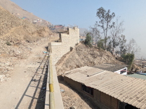

IMÁGENES REFERENCIALES DE LA INSTITUCIÓN EDUCATIVA SECUNDARIA - AKIRA KATO DE ATE

ANÁLISIS
Impacto Ambiental
1. Plan de Monitoreo
2. Identificación de impactos del proyecto
3. Plan de Mitigación
1.1. Impacto a la calidad de aire
1.2. Generación de ruido
1.3. 6Impacto a la calida del suelo
2.1. Monitoreo de calidad del aire
2.2. Monitoreo del nivel de ruido
2.3. Monitoreo de manejo de residuos sólidos
3.1 Riesgo permanente en la zona de trabajo
3.2. Silenciadores para maquinaria
3.3 Limpieza permanente en zona de trabajo
ANÁLISIS DE RIESGOS
| Tipo 1 | Tipo 2 | Clasificación de peligro | Fuente |
|---|---|---|---|
| De origen Natural | Sismos | Alto | PREDES / UNI / RNE |
| Tsunamis | No hay riesgo | PREDES | |
| Heladas | No hay riesgo | SENAMHI | |
| Friajes | No hay riesgo | SENAMHI | |
| Erupciones volcánicas | No hay riesgo | IGP | |
| Sequías | No hay riesgo | SENAMHI | |
| Granizadas | No hay riesgo | SENAMHI | |
| Lluvias intensas | No hay riesgo | Plan de Prevención y Reducción de Riesgo de Desastre de Lima Metropolitana. | |
| Avalanchas | No hay riesgo | SENAMHI | |
| Flujos de lodo (Huaycos) | No hay riesgo | INGEMMET | |
| Deslizamientos | Bajo | INGEMMET | |
| Erosión | Bajo | Plan de Prevención y Reducción de Riesgo de Desastre de Lima Metropolitana. | |
| Inundaciones | No hay riesgo | SENAMHI | |
| Vientos fuertes | No hay riesgo | SENAMHI | |
| Inducidos por la actividad humana | Incendio urbano | Bajo | INDECI |
| Incendio forestal | No hay riesgo | INDECI | |
| Radiación solar | Muy alto | SENAMHI | |
| Otros peligros naturales y/o antrópicos relacionados alos efectos del cambio climático | Derrame de sustancias peligrosas | No hay riesgo | Plan de Prevención y Reducción de Riesgo de Lima Metropolitana |
| Contaminación ambiental | Alto | SENAMHI |
¿CÓMO MITIGAR LOS RIESGOS
Sismos: Cumplir con las normas E 030 para el diseño de las estructuras proyectadas en la IE Akira Kato.
Radiación Solar: Durante la ejecución se utilizará los equipos de protección personal correspondientes, asimismo se instalarán áreas de descanso.
Contaminación ambiental: De acuerdo al plan de mitigación ambiental.